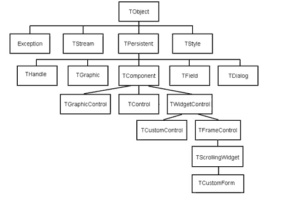

Мария Сысойкина
Вот наконец я и стала обладательницей заветной бело-синей коробочки с двумя дисками и тремя увесистыми томами документации внутри. Недолго думая, я отложила в сторону все сопроводительные материалы и второй диск с "продуктами третьих сторон" и стала устанавливать сам Kylix. Вопреки опасениям, программа инсталляции не стала требовать обновления многочисленных библиотек, и Kylix без проблем установился под последнюю версию Mandrake Spring 2001.
Как и ожидалось, при запуске (из меню) на экране появился знакомый любому Delphi-программисту набор инструментов. Внешне среда Kylix практически ничем не отличается от Delphi или C Builder под Windows. IDE содержит все привычные элементы рабочего пространства - главное меню, панели инструментов, Component Palette (Палитра компонентов), Object Inspector (Инспектор объектов), Code Editor (Редактор кода), Project Manager (Менеджер проекта) и Form Designer (Дизайнер форм). Хотя наличие отдельных компонентов среды зависит от версии продукта - Desktop Developer или Server Developer.
| Рис. 1. Внешний вид среды Kylix.
|
| Рис. 2. Внешний вид среды Delphi 5.
|
При запуске Kylix по умолчанию открывается новый проект с пустой формой, на которую можно выносить любые визуальные и невизуальные компоненты из предлагаемого на вкладках палитры компонентов набора.
Как и в Delphi, в Object Inspector в Kylix легко отредактировать свойства объектов и назначить обработчики событий.
Единственное, пожалуй, различие, которое тут же бросается в глаза, - в меню отсутствует пункт DataBase, а пройдясь по Component Palette, я не обнаружила многих привычных закладок - Win32, Win3.1, ADO, MIDAS, QReport… Отсутствие компонентов Win32, Win3.1 очевидно и не нуждается в комментариях, а вот что касается компонентов работы с базами данных - их количество в Kylix повергло меня в уныние. Но оно и понятно - Borland Database Engine в Kylix (и в Delphi, начиная с версии 6) полностью заменено новым, но на мой взгляд еще недостаточно развитым механизмом dbExpress, а такие механизмы, как ADO или COM, в Linux вообще отсутствуют.
С тех пор как я впервые услышала о Kylix, меня больше всего интересовал вопрос - действительно ли можно будет переносить Windows-приложения под Linux? И как это будет происходить? Поэтому первым делом, все так же не читая документации, я открыла созданный в Delphi 5 проект элементарного приложения с одной формой и несколькими кнопками. Проект благополучно открылся, но выполняться по команде RUN не стал, а компилятор выдал мне целый список ошибок. Первой ошибкой была "File not found: Forms.dcu"…
Пришлось открывать документацию и в подробностях изучать основу самой среды разработки Kylix - кросс-платформенную библиотеку CLX.
Библиотека CLX
Итак, CLX (Component Library for Cross Platform) - это вариант VCL, библиотеки визуальных компонентов Delphi и C Builder, но только разработанный без использования функций Windows API, что позволяет создавать приложения, не зависящие от ОС. Кроме того, CLX войдет и в следующие версии Delphi (начиная с 6), в дополнение к VCL.
CLX состоит из нескольких частей.
- BaseCLX содержит ядро компонентной модели. Сюда входят такие элементы, как функции работы со строками, ввод-вывод, функции работы с датой и временем, работа с файлами, обработка исключений.
- VisualCLX использует Qt, набор библиотек для создания графических интерфейсов от компании TrollTech. Эта часть кросс-платформенной библиотеки включает в себя основную массу визуальных компонентов из VCL.
- DataCLX использует dbExpress - новый механизм Borland для работы с различными SQL базами данных, включая Interbase и MySQL. DataCLX можно использовать в однозвенной архитектуре (база данных и приложение на одном и том же компьютере), архитектуре клиент-сервер или в многозвенной архитектуре.
- NetCLX предоставляет компоненты для работы с основными протоколами Интернета- TCP, FTP, HTTP и возможность писать клиентские и серверные программы с использованием модулей Apache. В Kylix технология Delphi WebBroker будет расширена поддержкой Apache. Это означает, что приложения для Web-сервера можно будет писать как в форме CGI, так и в форме Apache-модулей DSO.
Аналогично тому, как функции VCL обеспечивали доступ к графическим элементам управления Windows (кнопки, формы, окна и т.д.), CLX предоставляет доступ к виджетам из библиотек Qt. Но здесь есть свои особенности, связанные с реализацией самих библиотек Qt. В Kylix иначе организована работа с событиями и методами классов.
Визуальные компоненты CLX имеют свойство Handle - указатель на соответствующий виджет библиотек Qt. Через Handle осуществляется доступ к методам и свойствам класса данного виджета. Если вы явно (методом Create) или неявно (перетаскиванием компонента на форму) создаете объект CLX, то автоматически создается экземпляр соответствующего виджета. Создаваемый объект CLX будет владельцем этого экземпляра виджета. При уничтожении объекта созданный экземпляр виджета также удаляется. Если же вы явно создаете CLX-объект, используя метод объекта Create(AHandle), экземпляр соответствующего виджета передается в создаваемый объект. В этом случае CLX-объект не будет владельцем экземпляра виджета. И следовательно, при вызове метода Free уничтожается только CLX-объект. Это одно из отличий Kylix от Delphi в работе с объектами.
Отношения CLX и Qt API сродни отношениям VCL и функциям Windows API. Для того чтобы сопоставить классы CLX и виджеты Qt, был разработан промежуточный уровень между библиотекой компонентов и Qt API - CLXDisplay.
Некоторые компоненты VisualCLX просто инкапсулируют в себя классы Qt. Так, например, в библиотеках Qt есть класс Qbutton, который представляет виджет "кнопка". VisualCLX полностью инкапсулирует этот класс, создавая компонент Tbutton, и добавляет в него необходимые свойства, методы и события.
Другие компоненты представляют собой уже собственные классы CLX, написанные на базе VisualCLX и CLXDisplay.
Что касается общей иерархии классов CLX, то здесь дело обстоит следующим образом. Большинство компонентов сохранили свои имена и свойства. Основные различия в иерархиях объектов CLX и VCL видны из схем на рис. 3 и 4.
|  |
| Рис. 3. Иерархия основных классов CLX.
|
| Рис. 4. Иерархия основных классов VCL.
|
Хотя многие классы остались неизменными, как видно из схем, в связи с заменой элементов управления Windows на виджеты библиотек Qt класс TWinControl, например, теперь называется TWidgetControl. Аналогично изменились и названия других классов, описывающих в основном визуальные компоненты.
Однако, несмотря на эти изменения, нет необходимости менять типы в объявлениях переменных. В файле QControls.pas, например, содержится декларация
TWinControl = TWidgetControl;
позволяющая значительно упростить использование одних и тех же исходных файлов как для Windows=, так и для Linux-приложений.
Что касается имен модулей, в которых хранятся описания классов, здесь тоже кое-что изменилось. При компиляции в Kylix проектов уже существующих Windows-приложений вам придется вручную изменять имена некоторых модулей или убирать ссылки на несуществующие в Kylix модули.
Вот какие изменения произошли с модулями.
- К названиям модулей, содержащих описания визуальных компонентов, написанных с использованием библиотек Qt (вместо функций Windows API), прибавлена буква Q. Например, QButtons.pas, QControls.pas, QForms.pas (вот почему компилятор не мог найти dcu-файл для объявленного мной в разделе uses модуля Forms).
- Некоторые Windows-модули не были включены в Kylix в связи с тем, что в Linux отсутствуют такие механизмы, как ADO, COM и BDE.
- И наконец, в Kylix появились два новых модуля - DirSel и QStyle, соответственно для работы со структурой каталогов и стилями приложений.
Особенности приложений, созданных в Kylix
Работа как приложений в целом, так и отдельных графических элементов, созданных в Kylix, имеет некоторые особенности.
Внешний вид. Графическая среда Linux отличается от Windows, поэтому внешний вид окон программ и диалогов, созданных в Kylix, будет различным в зависимости от того, какую оболочку вы используете - KDE или Gnome.
Стили (Styles). У класса TApplication появилось новое свойство - Style, аналогичное свойству OwnerDraw некоторых объектов (которое позволяет задавать внешний вид компонентов). Это свойство позволяет задать внешний вид графических элементов приложения.
Работа с конфигурационными файлами. В Linux информация о конфигурации системы хранится не в реестре, а в текстовых файлах и переменных среды. Файлы системной конфигурации расположены в директории /etc. Для работы с этими файлами предназначен компонент TmemIniFile, а не TregIniFile, как это было в Delphi для Windows.
Работа приложений. У Kylix есть ряд отличий, влияющих на работу создаваемых приложений.
- ToggleButton - кнопка-переключатель, "утопленная кнопка", не переключается при нажатии клавиши Enter. Нажатие Enter не эквивалентно щелчку мыши, как это было в Delphi.
- В компоненте TColorDialog отсутствует свойство TColorDialog.Options. Более того, вы не сможете изменять по желанию внешний вид и работу диалога выбора цвета. Кроме того, форма TColordialog не всегда выступает как модальное окно. Вы можете работать со строкой заголовка всего приложения (минимизировать, разворачивать, перемещать окно), в то время как активным остается модальный диалог.
- В ходе работы программы в Kylix выпадающие списки (ComboBox) работают иначе, чем в Delphi. В Kylix существует возможность поместить в поле ввода некоторый текст и нажатием клавиши Enter добавить его в выпадающий список. Кроме того, в список можно добавлять пустые значения. А если вы передвигаетесь по выпадающему списку с помощью стрелки "вниз", то курсор не остановится на последней строке, а перейдет автоматически в начало списка.
- При обработке событий OnKeyDown или OnKeyUp приходится проверять код нажатой клавиши. В Windows код клавиши Enter - 13, а в Linux - 4100.
И теперь, чтобы закончить историю с переносом под Linux простейшего приложения, скажу, что мне пришлось лишь исправить в разделе uses названия некоторых модулей и удалить ссылки на модули, которые Kylix не поддерживает. После этого приложение скомпилировалось и выполнилось без ошибок.
Проблемы переноса
Конечно, этот элементарный пример не может в полной мере продемонстрировать все сложности переноса приложений с одной платформы на другую. А проблем может возникнуть множество. Для начала нужно вспомнить об особенностях самих сред Windows и Linux. Вот лишь небольшой перечень тех различий, которые сразу приходят на ум.
Чувствительность к регистру. В Linux, в отличие от Windows, заглавные и строчные буквы различаются. Это значит, что ABC.txt и abc.txt - два разных файла, тогда как Windows воспримет оба варианта как обращение к одному и тому же файлу.
Символ окончания строки. В Windows признаком конца строки служит комбинация символов CR/LF (ASCII 13 + 10), а в Linux - только LF.
Символ конца файла. В DOS и Windows символ со значением #26 (Ctrl-Z) считается признаком конца файла, даже если после этого символа идут какие-то данные. В Linux нет специального символа, указывающего на конец файла.
Пакетные файлы/скрипты. В Linux существует некий эквивалент BAT-файлов. Скрипты представляют собой текстовые файлы, содержащие инструкции. Язык этих скриптов зависит от используемой оболочки. Файлы скриптов сохраняются как исполнимые при помощи команды
chmode +x <scriptfile>
(подтверждение выполнения команды).
При попытке удалить или переименовать файл Windows обычно переспрашивает: "Действительно ли вы уверены в том, что хотите удалить этот файл?". Linux же не выдает никаких предупреждений, поэтому с легкостью можно по ошибке удалить или переименовать все что угодно.
Параметры командной строки. Для указания переключателей команд в Linux используется '-', а для опций команды '-'. В DOS это соответственно '/' и '-'.
Конфигурационные файлы. В Windows конфигурация хранится либо в системном реестре, либо в файлах типа autoexec.bat. В Linux конфигурационные файлы создаются как скрытые, и имя их начинается с точки. Хранятся они, как правило, в директории /etc.
DLL. В Linux отсутствует понятие DLL. Вместо них используются распределенные объектные файлы с расширением SO.
Имена дисков. В Linux для обозначения дисков не используются буквы. Вместо этого применяется понятие "Точка монтирования". Примером полного пути может служить такое выражение "/home/usr/kylix".
Расширения файлов. Расширения файлов в Linux не используются ни для обозначения исполнимых файлов (EXE для Windows), ни для обозначения типов файлов вообще. Кстати, из-за этого возникает весьма неприятная ситуация при работе с диалогами типа File|Open. В Kylix не предусмотрена маска "*" для обозначения выбора всех файлов. Приходится пользоваться атавизмом DOS "*.*".
Пути для файлов. Для разделения пути в Linux используется прямой слэш '/', а в DOS и Windows - обратный '\'. В Linux, если файл находится в текущей директории, то обращаться к нему нужно следующим образом:
./<имя_файла>.
Последовательность действий
Исходя из всего вышесказанного, можно набросать примерную последовательность действий при переносе Windows-приложений под Linux.
Шаг 1. Перенести все файлы приложения на компьютер с установленными на нем Linux и Kylix. К файлам приложения относятся следующие: исходные файлы приложения (файлы модулей с расширением PAS и файл проекта с расширением DPR) и файлы, относящиеся к проекту (файлы форм - DFM, файлы ресурсов - RES и файлы опций проекта - DOF). Если нужно компилировать приложение из командной строки, то необходимо перенести и конфигурационный файл с расширением CFG.
Шаг 2. Если одни и те же исходные коды будут использоваться как для Windows-, так и для Linux-версии, то необходимо скопировать DFM-файл и изменить его расширение на XFM, а затем переименовать ссылку на этот файл в соответствующем модуле с {$R *.dfm} на {$R *.xfm}. Если вы используете одни и те же исходные файлы для разных версий приложения, полезно использовать директивы $IFDEF … $ENDIF. Например, в этом случае можно не переименовывать ссылку на файл формы, а добавить следующие строки:
[$IFDEF MSWINDOWS]
{$R MyForm.dfm}
[$ENDIF]
[$IFDEF LINUX]
{$R MyForm.xfm}
[$ENDIF]
|
Шаг 3. Изменить все разделы uses. В исходных кодах должны быть ссылки только на существующие в Kylix модули. На этом шаге также можно применять директивы $IFDEF … $ENDIF.
Шаг 4. Переписать платформенно-зависимый код так, чтобы он мог без ошибок компилироваться и под Windows, и под Linux. Необходимо использовать директивы $IFDEF … $ENDIF для выделения блоков кода, зависящих от платформы. Например:
[$IFDEF MSWINDOWS]
IniFile.LoadfromFile('c:\x.txt');
[$ENDIF]
[$IFDEF LINUX]
IniFile.LoadfromFile('/home/name/x.txt');
[$ENDIF]
|
Шаг 5. Исправить в кодах все ссылки на пути к файлам. Определить правильное местонахождение файлов в ОС Linux и использовать константы PathDelim (для указания разделителя каталогов в строке пути), DriveDelim (описание расположения файлов на диске в терминах данной ОС) и PathSep (для указания разделителя при перечислении нескольких путей) из модуля SysUtils.
Шаг 6. Проследить за правильным использованием строчных и прописных букв в именах файлов.
Шаг 7. Скомпилировать приложение и при получении сообщений об ошибках внести соответствующие изменения.
Ну вот теперь, казалось бы, все: можно брать нормальное Windows-приложение и приступать к процессу внесения поправок и компиляции его под Linux. Ан нет. Нерешенным остался принципиальный вопрос - как будет дальше развиваться наше приложение?
Существует как минимум четыре варианта ответа на этот вопрос. Рассмотрим их последовательно.
1. Приложение будет работать только под Linux. В этом случае все относительно просто. Из проекта полностью убирается все, что имеет отношение к Windows, явно переписываются разделы uses во всех модулях, исправляются пути к файлам и проверяется регистр символов в именах файлов.
2. Параллельно поддерживаются две платформенно-зависимые версии приложения. В этом случае будут иметь место две различные версии продукта - для Windows и для Linux. Такой подход требует больших временных и финансовых затрат, так как каждое приложение создается отдельно, со своими исходными кодами, со своими особенностями разработки и поддержки. Но большой плюс заключается в том, что приложение полностью учитывает специфику поддерживаемой платформы и, следовательно, работает быстрее и имеет больше возможностей.
3. Кросс-платформенная разработка. Такой способ переноса приложений подразумевает использование одних и тех же исходных файлов для создания различных версий приложения - для Windows и для Linux. В принципе такая разработка занимает меньше времени, чем предыдущий вариант, но на деле количество работы во многом зависит от уже существующего кода.
Кроме того, этот вариант значительно дешевле, так как большая часть исходных кодов используется в обеих версиях.
4. Эмуляция Windows. Этот метод наиболее сложен и дорог, но создаваемое Linux-приложение будет выглядеть практически так же, как и существующее Windows-приложение. При таком подходе требуется реализовать соответствующие возможности Windows в Linux, что весьма сложно с инженерной точки зрения.
Подытоживая вышесказанное, можно с уверенностью сказать, что Kylix предлагает достаточно возможностей для переноса Windows-приложений под Linux. Конечно, Windows и Linux имеют больше различий, чем общих моментов, и программистам придется немало потрудиться над разработкой платформенно-независимых версий программ. Однако стоит отдать должное разработчикам Borland, проделавшим огромную работу по переносу самой среды под Linux.